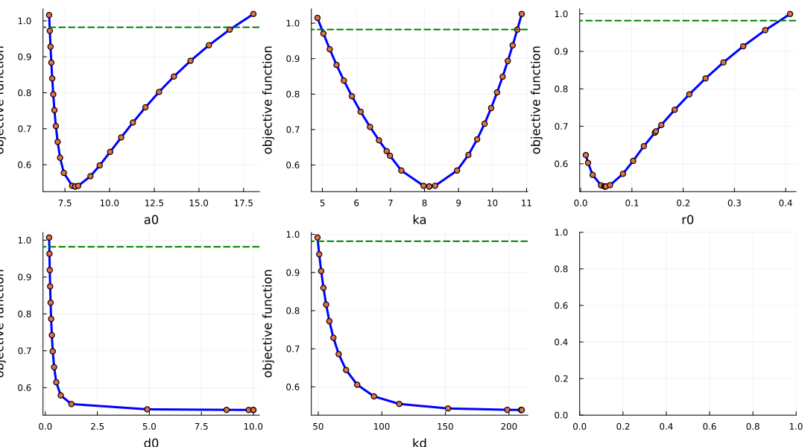

Taxol model
As an example of practical identifiability analysis, we use the Cancer Taxol Treatment Model. This model was proposed as a case-study for identifiability by Marisa C.Eisenberg, Harsh V.Jain. We have translated the model from cancer-chemo-identifiability repo into the Julia language.
The model has three states:
- P(t) - the number of cells in G2/M phase of the cell cycle
- Ap(t) - the number of cells in G1/S phase of the cell cycle
- Ar(t) - the number of cells arrested in G2/M due to drug action
And five unknown parameters:
- a0 - the maximum rate of arrest of cells in G2/M
- ka - the sensitivity of proliferating cells to taxol
- r0 - the rate of arrested cell recovery to the proliferating pool
- d0 - the maximum rate of arrested cell death
- kd - the arrested cell death rate half-saturation constant
We start with loading the necessary packages:
#=
using Pkg;
Pkg.add([
"LikelihoodProfiler",
"OptimizationLBFGSB",
"OrdinaryDiffEqTsit5",
"Distributions",
"ComponentArrays",
"Plots"
])
=#
using LikelihoodProfiler
using OptimizationLBFGSB
using OrdinaryDiffEqTsit5
using Distributions
using ComponentArrays
using PlotsWe define the constants (fixed parameters):
- Vt - total available volume / carrying capacity
- V0 - half-saturation free volume; crowding threshold
- lam - the tumor cell division rate
- aRP - transition rate from G1/S to G2/M
- arstexp - Hill function coefficients for drug effects on the cells
- adthexp - Hill function coefficients for drug effects on the cells
- theta - Hill coefficient for crowding
const Vt = 10.515*100
const V0 = 1.3907*Vt
const lam = 9.5722
const aRP = 20
const arstexp = 3
const adthexp = 4
const theta = 10;10The model is defined as a system of ordinary differential equations (ODEs) with the following structure:
# https://github.com/marisae/cancer-chemo-identifiability/blob/master/Profile%20Likelihood/testa0_de.m
function taxol_ode(du, u, p, t)
a0, ka, r0, d0, kd = p.params
drug = p.drug
Ncel = u[:P] + u[:Ap] + u[:Ar]
Lfac = ((Vt-Ncel)^theta)/((V0^theta) + ((Vt-Ncel)^theta))
arst = a0*(drug^arstexp)/(ka^arstexp + (drug^arstexp))
adth = d0*(drug^adthexp)/(kd^adthexp + (drug^adthexp))
arcv = r0
du[:P] = -lam*u[:P] + aRP*u[:Ap]*Lfac - arst*u[:P] + arcv*u[:Ar]
du[:Ap] = 2*lam*u[:P] - aRP*u[:Ap]*Lfac
du[:Ar] = arst*u[:P] - adth*u[:Ar] - arcv*u[:Ar]
return nothing
end;taxol_ode (generic function with 1 method)We define the initial conditions for the ODE system, and optimal parameters for the model, which were obtained from Marisa's Matlab code. Finally, we define the time span for the simulation and create an ODEProblem instance.
u0 = ComponentArray(
P = 7.2700,
Ap = 2.5490,
Ar = 0.0
)
function taxol_params(x, d)
return ComponentArray(params = x, drug = d)
end
taxol_params0 = ComponentArray(
a0 = 8.3170,
ka = 8.0959,
r0 = 0.0582,
d0 = 1.3307,
kd = 119.1363,
)
p0 = taxol_params(taxol_params0, 5.0)
tspan = (0.,15.)
ode_prob = ODEProblem(taxol_ode, u0, tspan, p0)ODEProblem with uType ComponentArrays.ComponentVector{Float64, Vector{Float64}, Tuple{ComponentArrays.Axis{(P = 1, Ap = 2, Ar = 3)}}} and tType Float64. In-place: true
Non-trivial mass matrix: false
timespan: (0.0, 15.0)
u0: ComponentVector{Float64}(P = 7.27, Ap = 2.549, Ar = 0.0)Next, we define the experimental data for the model. The data consists of measurements of the number of cells at different time points and for doses of Taxol (5, 10, 40, 100) ng/ml.
# https://github.com/marisae/cancer-chemo-identifiability/blob/master/Profile%20Likelihood/testa0_fit.m
times = [0., 3., 6., 9., 12., 15.] # days
dose = [5., 10., 40., 100.]; # dose in ng/ml
# Control data
Cell = [0.009, 0.050, 0.120, 0.189, 0.230, 0.260]*1091.0 # thousands of cells
Cerr = [0.006, 0.012, 0.010, 0.011, 0.011, 0.011]*1091.0 # thousands of cells
# 0.005 ug/ml Taxol
Cell005 = [0.009, 0.047, 0.089, 0.149, 0.198, 0.219]*1091.0 # thousands of cells
Cerr005 = [0.006, 0.013, 0.010, 0.011, 0.013, 0.010]*1091.0 # thousands of cells
# 0.010 ug/ml Taxol
Cell010 = [0.009, 0.043, 0.077, 0.093, 0.109, 0.128]*1091.0 # thousands of cells
Cerr010 = [0.006, 0.012, 0.013, 0.012, 0.014, 0.012]*1091.0 # thousands of cells
# 0.040 ug/ml Taxol
Cell040 = [0.009, 0.025, 0.047, 0.054, 0.076, 0.085]*1091.0 # thousands of cells
Cerr040 = [0.005, 0.010, 0.010, 0.011, 0.010, 0.010]*1091.0 # thousands of cells
# 0.100 ug/ml Taxol
Cell100 = [0.009, 0.025, 0.026, 0.028, 0.029, 0.031]*1091.0 # thousands of cells
Cerr100 = [0.006, 0.010, 0.009, 0.008, 0.011, 0.011]*1091.0 # thousands of cells
C005 = mean(Cell005)
C010 = mean(Cell010)
C040 = mean(Cell040)
C100 = mean(Cell100)
data = [Cell005/C005, Cell010/C010, Cell040/C040, Cell100/C100]
datamean = [C005, C010, C040, C100];4-element Vector{Float64}:
129.2835
83.4615
53.82266666666667
26.911333333333335We define the solver setup and the objective function for the optimization problem.
solver_opts = (
alg = Tsit5(),
reltol = 1e-6,
abstol = 1e-8,
)
function taxol_obj(x, hp)
loss = 0.
for (i,d) in enumerate(dose)
prob = remake(ode_prob; p = taxol_params(exp10.(x), d))
sol = solve(
prob,
solver_opts.alg,
reltol=solver_opts.reltol,
abstol=solver_opts.abstol,
saveat=times)
if !SciMLBase.successful_retcode(sol)
return Inf
end
for time_idx in eachindex(data[i])
sim = (sol[1, time_idx] + sol[2, time_idx] + sol[3, time_idx]) / datamean[i]
loss += abs2(sim - data[i][time_idx])
end
end
return loss
endtaxol_obj (generic function with 1 method)Confidence-level for the profile likelihood threshold is also chosen according to the original paper. The threshold line represents the value of the objective function (or negative log-likelihood) that corresponds to the chosen confidence level. Where the profile curve intersects this threshold gives the lower and upper CI bounds.
# https://github.com/marisae/cancer-chemo-identifiability/blob/master/Profile%20Likelihood/testa0_fit.m#L40-L41
taxol_relative_errors = vcat(
Cerr005 / C005,
Cerr010 / C010,
Cerr040 / C040,
Cerr100 / C100,
)
sigmasq = mean(taxol_relative_errors)^20.03997452437090424We optimize the logarithms of the parameters rather than their values on the original scale. Optimization in log space is often recommended because it puts parameters with different orders of magnitude on a more common scale, which can improve the numerical behavior of the optimizer. The objective function therefore converts x back to the original parameter scale with exp10.(x) before solving the ODE.
We define the initial parameter values and bounds in log space and wrap the objective function into an OptimizationProblem instance. The fitted parameters use a flat, named ComponentArray, separate from the nested ODE parameters that also contain the drug dose. This allows ProfileLikelihoodProblem to infer the parameter labels automatically.
opt_params0 = log10.(taxol_params0)
lb = log10.(ComponentArray(
a0 = 2.0,
ka = 2.0,
r0 = 0.01,
d0 = 0.05,
kd = 30.0,
))
ub = log10.(ComponentArray(
a0 = 30.0,
ka = 30.0,
r0 = 0.6,
d0 = 10.0,
kd = 210.0,
))
optf = OptimizationFunction(taxol_obj, AutoForwardDiff())
optprob = OptimizationProblem(optf, opt_params0; lb, ub)OptimizationProblem. In-place: true
u0: ComponentVector{Float64}(a0 = 0.9199667014833871, ka = 0.9082651351532822, r0 = -1.2350770153501116, d0 = 0.12408015687969996, kd = 2.0760441081471197)To define the profile likelihood problem, we use the OptimizationProblem and optimal (best fit) values of the parameters. Because the optimization variables are logarithms, the profile likelihood is also computed in log space. We can also specify the threshold for the profile likelihood, define the profile bounds and other options for the ProfileLikelihoodProblem.
Next we choose the profile likelihood algorithm and solve the problem. Here we use an OptimizationProfiler which steps through the parameter of interest and re-optimizes the nuisance parameters at each step. This stepping is done adaptively. The direction of the step is chosen on the basis of previous successful steps and the step size is adjusted based on linesearch.
We can also set reoptimize_init=true to re-optimize the initial starting point to reassure we start profiling from the optimum.
plprob = ProfileLikelihoodProblem(optprob, opt_params0; threshold = sigmasq*chi2_quantile(0.95, 5))
alg_opt = OptimizationProfiler(optimizer = LBFGSB(), stepper = AdaptiveStep())
sol = solve(plprob, alg_opt; reoptimize_init=true)Profile Likelihood solution. Use `sol[i]` to index the computed profiles.
ProfileLikelihoodSolution stores the computed profile curves together with confidence interval endpoints and identification retcodes, which indicate whether each parameter is practically identifiable. These values can be accessed directly:
retcodes(sol)
endpoints(sol; xtransform=exp10)5-element Vector{NamedTuple{(:left, :right)}}:
(left = 6.644723156323117, right = 16.911002667929797)
(left = 4.983728866146825, right = 10.728019095768573)
(left = nothing, right = 0.3879294710826125)
(left = 0.19084304331795104, right = nothing)
(left = 49.69063579012813, right = nothing)Finally, we plot the resulting profiles, using xtransform=exp10 to display the parameter axes on their original scale. Each point on the curve corresponds to a profiler step, i.e., a constrained optimization performed at a fixed value of the profiled parameter. The horizontal line indicates the likelihood threshold for the chosen confidence level; its intersections with the curve define the confidence interval bounds. Steeper profiles indicate better identifiability, whereas flat curves or curves that never intersect the threshold indicate parameters that are not practically identifiable.
plot(sol, xtransform=exp10)